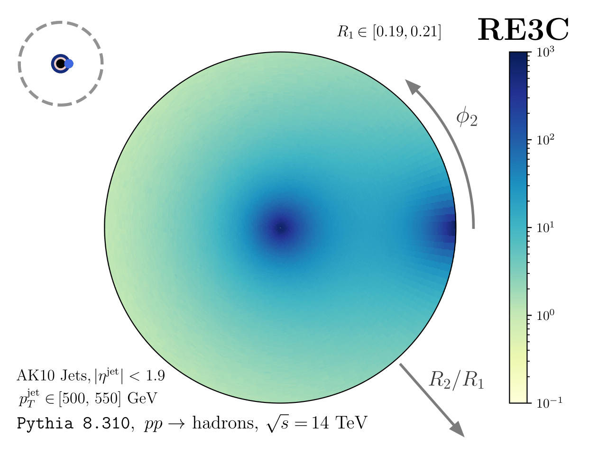
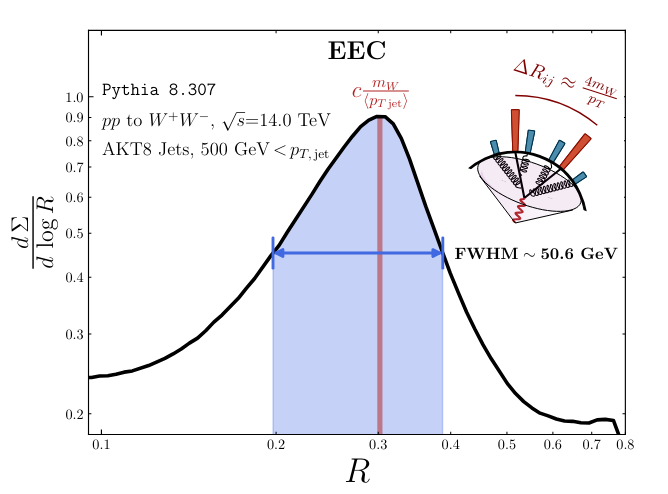

Python · C++
ResolvedEnergyCorrelators
A computational speed-up that broke records for N-particle energy correlations, turning physics-rich QCD correlations into "bullseye" images you can read intuitively.

A computational speed-up that broke records for N-particle energy correlations, turning physics-rich QCD correlations into "bullseye" images you can read intuitively.

Tools for energy-weighted differential cross sections between pairs of jet and subjet observables ("EWOCs"), isolating clean, calculable structure inside LHC events.
Monte-Carlo tools for jet physics: phase-space integration and parton-shower algorithms at leading, leading-log, and modified-leading-log accuracy. The engine behind PIRANHA.
Analytic, approximate, and Monte-Carlo tools for computing the production of beyond-the-Standard-Model particles at a high-energy muon beam dump, with FeynRules / MadGraph model generation.
General-purpose file-management tools for initializing, cataloging, and interacting with complex data and figure directories — a "librarian" for research projects. Published to PyPI.
Source and resources for my MIT Ph.D. thesis, Particles Inside Particles: The Flow of Energy in Quarks, Gluons, and Jets.
Reusable LaTeX tooling I maintain for academic writing, including a mastery-question template, plus other formats across my repositories.
Notes I've written over the years across quantum field theory, QCD, and mathematical physics — shared in case they're useful, typeset with my own LaTeX notes template.
The irrelevant TT̄ deformation of two-dimensional quantum field theories and its solvable structure.
An introduction to supersymmetric quantum mechanics — the algebra, the superpotential, and worked examples.
Grassmann numbers and Berezin integration — the algebra that makes fermions work in path integrals.
Electroweak symmetry breaking and the Higgs mechanism — how gauge bosons and fermions get their mass.
How heavy particles during inflation leave distinctive signatures in the primordial power spectrum.
A graduate-coursework final project write-up in advanced quantum mechanics.
Documentation for a CMS data-analysis pipeline I worked on in 2018.